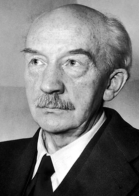
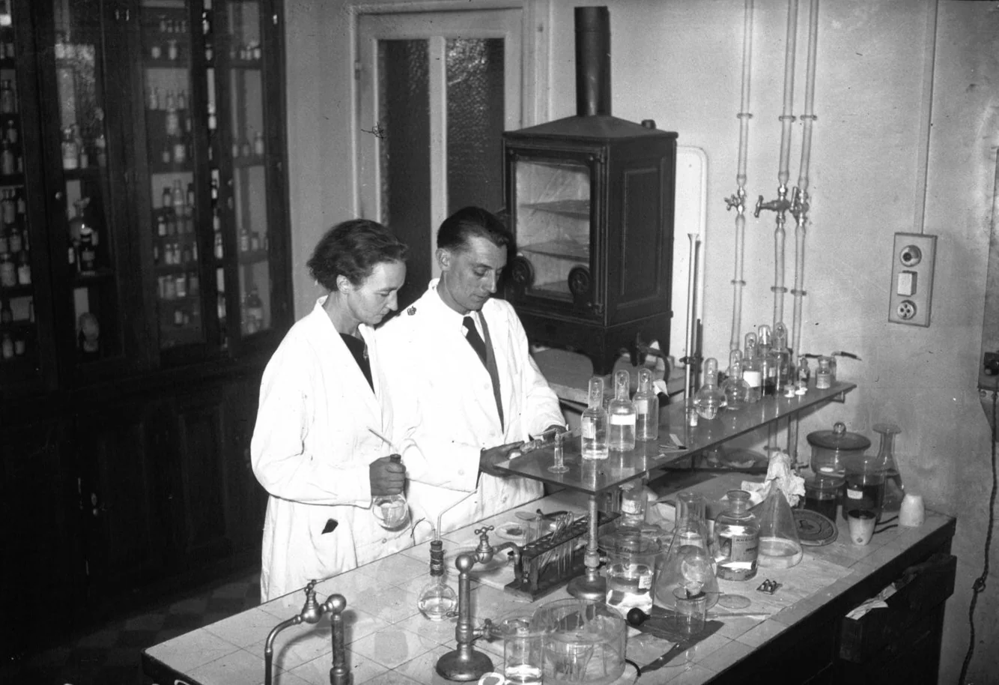
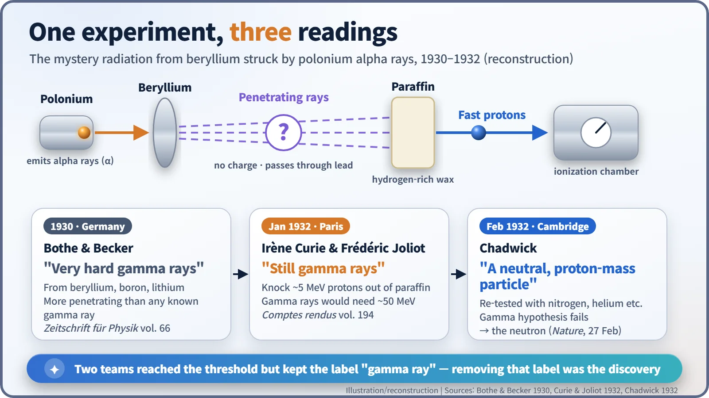
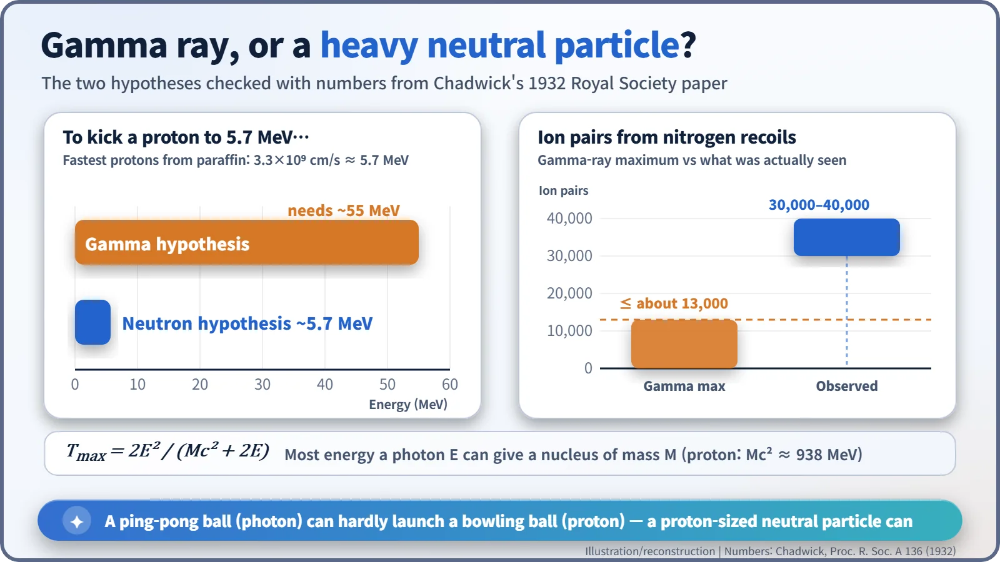

Nuclear History · 042
The Ray That Went Through Lead — and Got the Wrong Name: Bothe and Becker's Penetrating Radiation (1930)
A radiation from beryllium went through lead better than any gamma ray, and two teams kept calling it gamma rays until the numbers broke.
In 1930 Walther Bothe and Herbert Becker found that beryllium struck by polonium alpha rays gave off a radiation that passed through lead better than any known gamma ray. In January 1932 Irène and Frédéric Joliot-Curie showed it could knock fast protons out of paraffin wax, yet both teams still called it gamma rays. The numbers did not add up, and within weeks James Chadwick showed the radiation was a new neutral particle: the neutron.
A very strange cat
Suppose you found an animal nobody had ever seen, and the only word you knew for a furry four-legged creature was "cat". You would probably write it down as "a very strange cat". In 1930 two German physicists were in exactly that position. They had, in effect, the first neutrons in their hands, and they labelled them "gamma rays".
Knocking on light nuclei with alpha rays
In the late 1920s, one of the favourite experiments in nuclear physics was beautifully simple. Take the alpha rays (helium nuclei) given off by a radioactive element such as polonium, fire them at a light element, and see what comes out. After Ernest Rutherford had used this trick to knock protons out of nitrogen, everyone wanted a go.
One of them was Walther Bothe (1891–1957), who headed the radioactivity laboratory at the Physikalisch-Technische Reichsanstalt (PTR), Germany's national physics laboratory in Berlin. Together with his colleague Herbert Becker, he bombarded lithium, beryllium and boron with alpha rays from polonium. [5]

1930: a radiation that shrugged off lead
The results appeared in May 1930 in volume 66 of Zeitschrift für Physik, under the title "Künstliche Erregung von Kern-γ-Strahlen" ("Artificial excitation of nuclear gamma rays", our translation). Beryllium gave off a particularly strong radiation. An electric field did not bend it, and it was more penetrating than any gamma ray then known. It passed through thick lead remarkably well. [1] [4]
A radiation with no charge and huge penetrating power: to a physicist of 1930, that could only mean gamma rays, very energetic light. Rutherford had speculated in 1920 that a heavy particle with no charge might exist, but nobody had ever seen one. So Bothe and Becker concluded that nuclei struck by alpha rays were emitting unusually hard gamma rays. Sources disagree on where the work was done, Berlin or Giessen (where Bothe moved in 1930), and some textbooks wrongly date it to 1928; the paper itself is from 1930.
The Paris twist: gamma rays that kick protons?
The "beryllium radiation" was pursued hardest at the Radium Institute in Paris by Irène Joliot-Curie (1897–1956) and Frédéric Joliot-Curie (1900–1958). As befitted Marie Curie's institute, they had an unusually strong polonium source.
In January 1932 they reported a startling result in volume 194 of the Comptes rendus of the French Academy of Sciences. When they put paraffin wax, which is rich in hydrogen, in the path of the beryllium radiation, fast protons of about 5 MeV came flying out. Yet they still interpreted this as gamma rays knocking protons out, in the way light can knock electrons about. [2] [4]


Can a ping-pong ball launch a bowling ball?
The trouble was arithmetic. A particle of light (a photon) has no mass, so it is very bad at giving a heavy proton a hard kick, rather like trying to launch a bowling ball by throwing ping-pong balls at it. Even on the Joliot-Curies' own estimate, each gamma-ray photon would need about 50 MeV. The strongest natural gamma rays known were around 2.6 MeV, so this was more than ten times beyond anything on record. [3]
If instead the radiation were a neutral particle about as heavy as a proton, everything became easy. When two billiard balls collide head-on, the moving one hands over almost all its energy; such a particle would only need about as much energy as the protons it set moving. Today we know the answer. When beryllium-9 swallows an alpha particle it becomes carbon-12 and releases a neutron, and the carbon nucleus, often left excited, also sends out some genuine gamma rays. What Bothe and Becker had seen was a mixture of neutrons and gamma rays.

The man who changed the label
The Paris paper reached the Cavendish Laboratory in Cambridge. According to James Chadwick's later recollection, when Rutherford heard the Joliot-Curies' interpretation he said, "I do not believe it." In Rome, according to a story often told, the young Ettore Majorana immediately saw that the result called for a neutral particle as heavy as a proton, but he never published the idea. [6] [7]
Chadwick repeated the experiments with nitrogen and other targets as well as hydrogen. Under the gamma-ray hypothesis, nitrogen nuclei could recoil only so hard; in his chamber, some produced two to three times more ionization than that limit allowed (30,000–40,000 ion pairs against a ceiling of about 13,000). Little more than a month after the Paris report, on 27 February 1932, his letter "Possible Existence of a Neutron" appeared in Nature. That story deserves its own telling. [3]
What the near-miss left behind
Bothe and the Joliot-Curies stopped at the threshold, but they did not end up as footnotes. The Joliot-Curies won the 1935 Nobel Prize in Chemistry for artificial radioactivity, and Bothe shared the 1954 Nobel Prize in Physics "for the coincidence method and his discoveries made therewith". Meanwhile the pairing of an alpha emitter with beryllium became the easiest neutron source available. It went on to Enrico Fermi's laboratory and, in later forms, became the start-up neutron sources that help bring reactors to life. The lesson of this short episode is simple: do not force a strange result into a familiar name. [5]